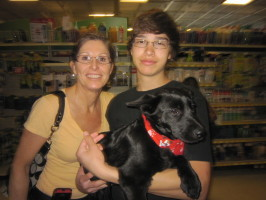

📞
General Inquiries
Have a question about adoption, events, or how to help? Give us a call or drop us an email.
- Phone: 832-527-9370
- Email: info@wagstowhiskerstx.com
🏠
Found an Animal? Foster?
Contact us directly for all found/rescued animal reports and foster program questions.
- Phone: 832-527-9370
- Email: info@wagstowhiskerstx.com
🚨
Animal Emergency
For animal cruelty, neglect, or emergency rescue situations, please contact the Houston SPCA directly.
- Houston SPCA:
- 713-880-HELP (4357)
💬
Follow Us
Stay up to date with our latest rescues, events, and happy tails by following us on social media.
- Facebook: WagsToWhiskersTX
- Twitter: @W2WTX
- Instagram: @w2wtx
We are a volunteer-run, non-profit rescue. Response times may vary — we appreciate your patience and thank you for helping us save animals in Texas!